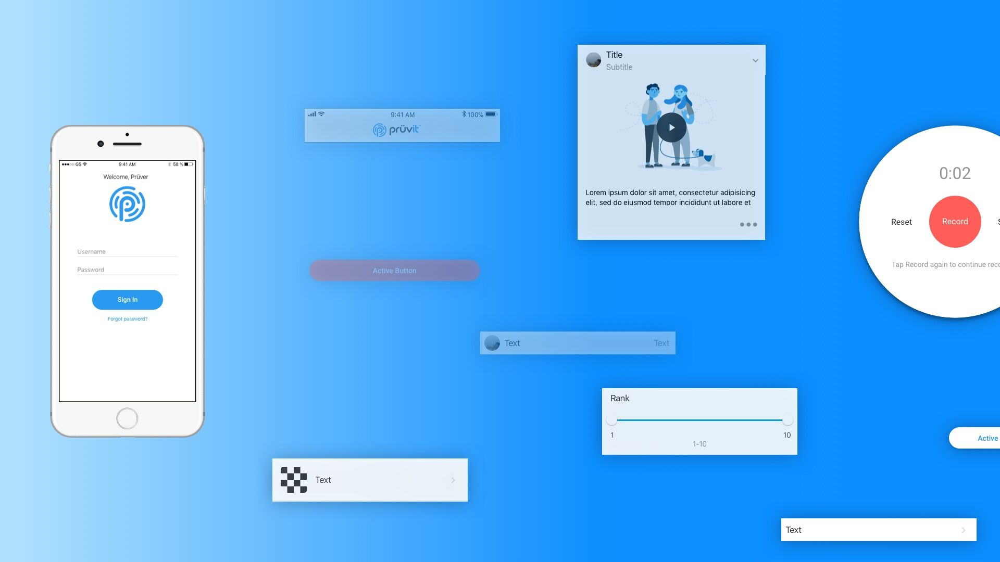
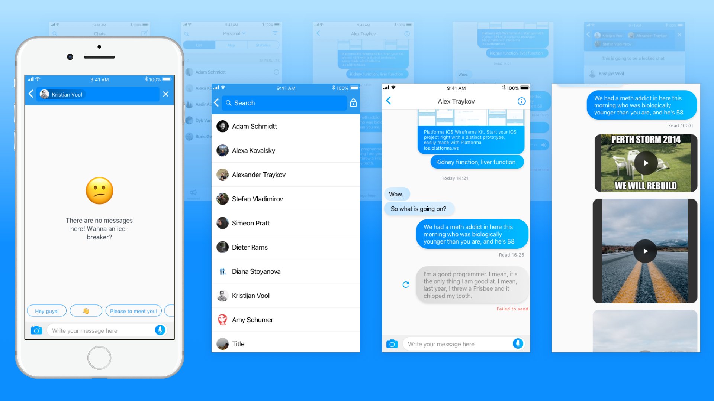
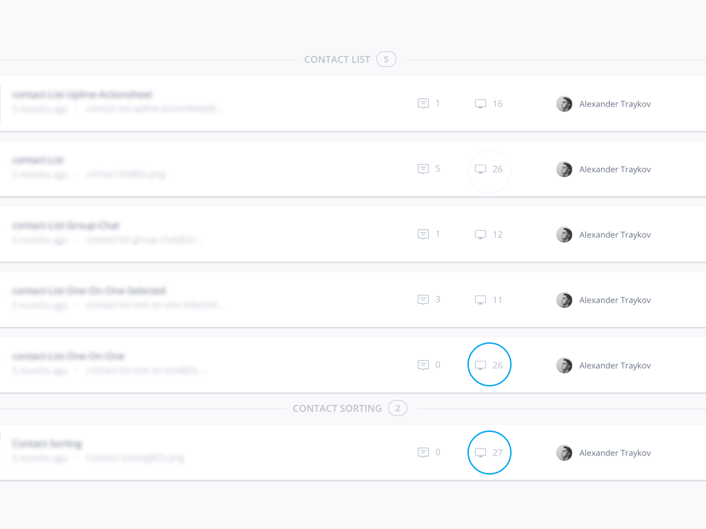

iOS Design
When the journey began
I was hired by Pruvit as an UI/UX Designer. My job was to improve and update the visual design for both Android and iOS and find any loop-holes or bad patterns and suggest a fix. Currently, I'm expanding the iOS Design Component System, which is based on HIG with some custom components as design as well. I'm continuing to work on the Material Design Component System, epsiecially since Google updated their design system. Pruvit took the decision to create and implement a component-based systems because it has the vast benefits of reusability, consistency throughout the designs and the mindblowing speed regarding iteration in Sketch. On top of that, since Sketch introduced libraries the reusability of components scale to multiple designers and with version control apps like Abstract, it has enormous benefits.
Design Process
First steps
At the beginning of our work, my task was to transfer the designed elements from Photoshop to Sketch. It was a long and beneficial process, since I had to design the components all over again, which gave me the ability to suggest bettern interaction patterns for some of them. When the component transfer was done, I had to give some order to our component library. That was my first touch with any form of component systematization. Before I began any kind of organizational process, I converted all of the designed components into Symbols. Please review the example below:
Fragmenting components
After the first week of using the combination of Sketch Runner and the reusable components I made, I started to encounter some problems. The issue I faced was that I had to detach a lot of the symbols I made so I could do a small change on them. After the shift was done I converted the new symbol, so I had literally two symbols that their only difference was, for example, that one of them had a blue paragraph element and the other had black. This worried me since it increased the size of the system significantly, it was hard to define the names of components, and in general, I was making a mess. In that moment of time, I spent some time researching the idea of symbol nesting.
Increasing the symbol's flexibility
With essential symbol nesting, I was able to design most of my components to follow a similar logic when used. When I had to showcase some sort of interactivity with an element, I had to detach the symbols again. This is why I decided to work this out the other way around - every time a repeatable interactivity pattern occurred, I transformed it into symbols. With this decision, I made myself the future favor when encountering the same/similar interaction pattern in the building process of other Pruvit apps.
After we had the base wireframes for the mobile, we iterated on the component placement on the page, until we found the exact the layout we were looking for.
Iterrations, itterations, itterations
When I began working side by side with Pruvit's team, we just started implementing new app features I remember that I designed many screens that got scraped in the search of a better pattern or layout. Implementing new features can be described like this - A loop of "Communicate - Itterate" with the Pruvit team. Probably the best process for work being done remotely.
There's more to come
Since my work with Pruvit is still work in progress I'll keep this page updated. A lot of the features we're working on are still work in progress, so expect more to come.
Conclusion
Project Timeframe
May 2017 - Present
Design Tools Used
Sketch, InVision, Craft by InVision, After Effects, Principle, Framer
Link to Final Project
Pruvit on iOSOther projects
Web Design
ADSuisse